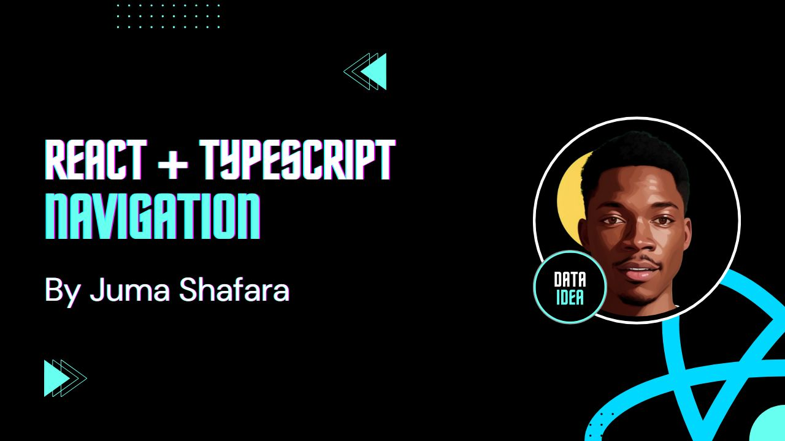

In this guide, we’ll create a new React project with Vite, set up TypeScript, integrate Tailwind CSS for styling, and add a basic navigation bar using React components.
Step 1: Set Up the Project with Vite and TypeScript
First, let’s create our React app using Vite, a fast front-end build tool.
Open your terminal and run:
npm create vite@latestYou’ll be prompted to name your project. Enter a name, such as
react-navigation.Select React as the framework and TypeScript as the variant.
Navigate into the project folder:
cd react-navigationInstall dependencies:
npm install
Your project is now set up with Vite and TypeScript!
Step 2: Install and Configure Tailwind CSS
To add Tailwind CSS for styling:
Install Tailwind and its dependencies:
npm install -D tailwindcss postcss autoprefixer npx tailwindcss init -pConfigure Tailwind by updating the
tailwind.config.jsfile to include your template paths:// tailwind.config.js module.exports = { content: ["./index.html", "./src/**/*.{js,ts,jsx,tsx}"], theme: { extend: {}, }, plugins: [], };Add Tailwind’s directives to your CSS file. Open
src/index.cssand replace its content with:/* src/index.css */ @tailwind base; @tailwind components; @tailwind utilities;
With Tailwind configured, you’re ready to style your app!
Step 3: Set Up React Router
We’ll use react-router-dom to create navigation between different pages in our app.
Install
react-router-dom:npm install react-router-domWrap the app with
BrowserRouterinmain.tsxto enable routing:// main.tsx import React from "react"; import ReactDOM from "react-dom/client"; import { BrowserRouter } from "react-router-dom"; import App from "./App"; import "./index.css"; ReactDOM.createRoot(document.getElementById("root") as HTMLElement).render( <React.StrictMode> <BrowserRouter> <App /> </BrowserRouter> </React.StrictMode> );
Step 4: Create Basic Page Components
In the src folder, create a pages folder, and inside it, create three files for the pages of our app:
- Home.tsx
- TermsOfService.tsx
- PrivacyPolicy.tsx
Each file will export a simple functional component with a title. Here’s an example for each:
Home.tsx
import React from "react";
const Home: React.FC = () => {
return <h1>Home Page</h1>;
};
export default Home;TermsOfService.tsx
import React from "react";
const TermsOfService: React.FC = () => {
return <h1>Terms of Service</h1>;
};
export default TermsOfService;PrivacyPolicy.tsx
import React from "react";
const PrivacyPolicy: React.FC = () => {
return <h1>Privacy Policy</h1>;
};
export default PrivacyPolicy;Step 5: Define Routes in App.tsx
With the pages ready, we’ll define routes in App.tsx to make each page accessible.
Import the pages and set up routing using
RoutesandRoutefromreact-router-dom:// App.tsx import React from "react"; import { Routes, Route } from "react-router-dom"; import Home from "./pages/Home"; import TermsOfService from "./pages/TermsOfService"; import PrivacyPolicy from "./pages/PrivacyPolicy"; const App: React.FC = () => { return ( <div> <Routes> <Route path="/" element={<Home />} /> <Route path="/terms-of-service" element={<TermsOfService />} /> <Route path="/privacy-policy" element={<PrivacyPolicy />} /> </Routes> </div> ); }; export default App;This code enables navigation to:
- Home at
/ - Terms of Service at
/terms-of-service - Privacy Policy at
/privacy-policy
- Home at
Testing the Setup
Run the app and try navigating between links in the navbar. You should see the page content change without reloading.
npm run devConclusion
In this guide, we started from scratch to build a React app using Vite, added TypeScript for type safety, styled with Tailwind CSS, and created a basic navigation bar as a reusable component. By creating and organizing components, we’ve built a foundation for scalable, maintainable code in React.
This is just the beginning! In future guides, we’ll explore more advanced features, add functionality, and dive deeper into component design.